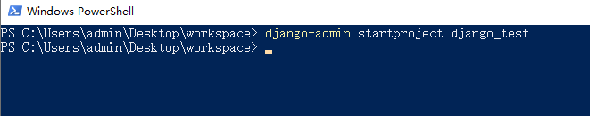
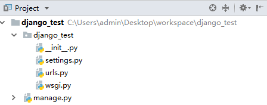
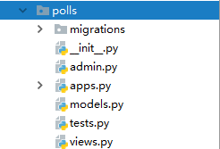
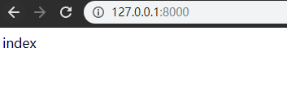

django框架的使用
创建项目
使用 django-admin 创建 Django 项目 ，在控制台输入。
语法：
django-admin startproject 项目名称
如:
django-admin startproject django_test

Django项目结构

- manage.py
功能： 包含执行django中的各项操作的指令
如： 启动服务 runserver
-
主目录 django_test/django_test
-
__init__.py项目的初始化文件，自动运行
-
urls.py
项目的基础路由配置文件
-
wsgi.py
Web Server Gateway Interface Web 服务网关接口
-
settings.py
项目的配置文件
python 1. BASE_DIR 项目根目录 2. ALLOWED_HOSTS 设置允许访问到本项目的地址列表 如果允许在网络中被其他的机器访问到的话 推荐写["*"], 表示任何能够表示该机器的地址都能访问到该项目 同时在启动服务时还需要指定地址和端口 python3 manage.py runserver 0.0.0.0:8000 3. INSTALLED_APPS 指定已安装的应用，如果由自定义的应用的话需要在此注册 4. MIDDLEWARE 中间件，如果有自定义的中间件，需要在此注册 5. ROOT_URLCONF 指定项目的基础路由配置文件 6. TEMPLATES 配置模板的相应信息 7. DATABASES 配置数据库的信息 8. LANGUAGE_CODE 设置语言，主要设置中文的话，允许将值改为'zh-Hans' 9. TIME_ZONE 指定时区，默认时区，允许将值更改为"Asia/Shanghai"
url的使用
-
urls.py默认在主目录中，主路由配置文件，会包含最基本的地址映射，每个地址访问都必须要先经过该文件
作用：通过urls中定义好的地址找到对应的视图处理函数
python urlpatterns = [ path('admin/', admin.site.urls), ] -
path()作用：为了匹配用户的访问路径
语法:
``` from django.urls import path
path(route, view, kwargs=None, name=None) route: 匹配请求的url view: 地址匹配上之后要执行操作的视图处理函数 kwargs: 字典，用来想view传参的，可以省略 name: 为url起别名, 在地址反向解析时使用 ```
- 向url传递参数
方式一：通过path的参数kwargs的方式传递，不推荐，这里依赖了django框架，不通用。
方式二：通过http协议进行传参
-
get请求
http:// xxxx.com/login?id=1&token=xxx
-
post请求
http:// xxx.com/login
数据放在 form-data里，详细一点的话就是放在http请求的请求体里（可以去看看http协议的内容）
数据怎么取？？
后面的教程会讲到。
Django中的应用
- 什么是应用 ？ 应用就是网站中的一个独立的模块 如: 网易网站可分为若干应用组成
新闻应用: 与新闻相关的内容 车应用: 与汽车相关的内容
科技应用: 与科技相关的内容
在django中, 主目录一般不处理具体的请求, 主目录一般处理的是项目的初始化操作 处理的是初始化操作, 以及请求的分发(分布式请求处理), 而具体的请求是由各个应用去处理.
-
创建应用
-
命令
python python manage.py startapp 应用的名称 -
需要在settings.py 中进行注册 ， 在INSTALLED_APPS 中追加应用的名称来注册应用
python INSTALLED_APPS = [ 'django.contrib.admin', ... ... '自定义的应用名称' ] -
应用的解析组成
- migrations 文件夹 : 存放数据库的中间文件
__init__.py: 应用的初始化文件admin.py: 应用的后台管理配置文件apps.py: 和应用的属性配置文件models.py: Models 与 模型相关的映射文件tests.py: 应用的单元测试文件-
views.py: 视图处理函数的文件 -
分部式的路由系统
在每个应用中分别创建urls.py, 格式参考主路由文件
目的: 为了处理各个应用中的请求路由
用法:
(这里直接引用django官方的例子)- 创建一个polls应用：
python python manage.py startapp polls
-
django_test/setting.py声明polls模块INSTALLED_APPS = [ 'django.contrib.admin', 'django.contrib.auth', 'django.contrib.contenttypes', 'django.contrib.sessions', 'django.contrib.messages', 'django.contrib.staticfiles', 'polls' # <- 这里 ] -
在polls包下创建
urls.py模块，并定义一个http://127.0.0.1:8000/ 路由。```python from django.urls import path from .views import index_view
urlpatterns = [ path('', index_view, name='index'), ] ```
-
编写试图函数
polls/views.py```python from django.http import HttpResponse from django.shortcuts import render
# Create your views here. def index_view(request): return HttpResponse('index') ```
-
将polls应用的urls注册到主路由系统中，
django_test/urls.py```python from django.contrib import admin from django.urls import path, include
urlpatterns = [ path('admin/', admin.site.urls), path('', include("polls.urls")), ] ```
-
启动服务，访问主页：http://127.0.0.1:8000/
